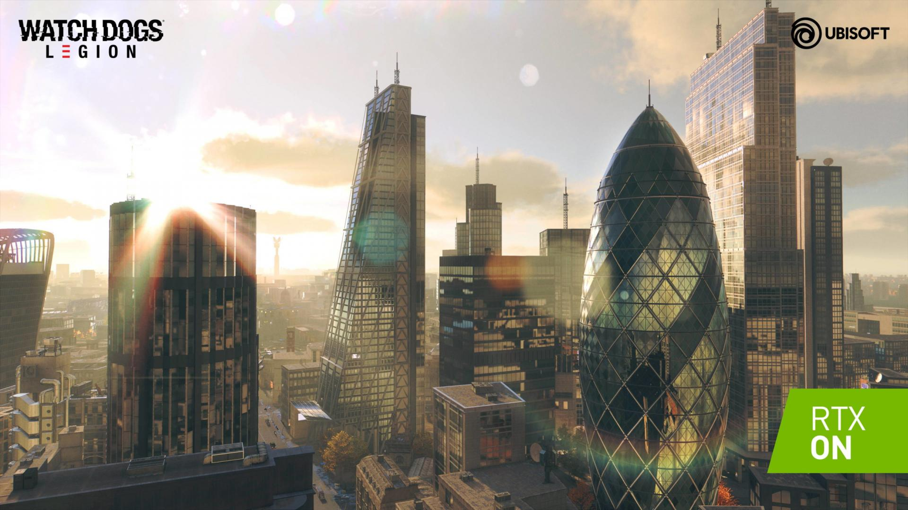
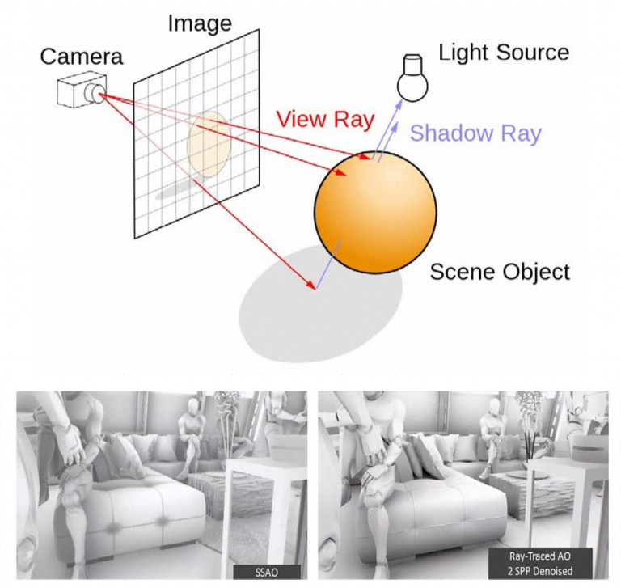

La veille technologique ou veille scientifique et technique consiste à s’informer de façon systématique sur les techniques les plus récentes et surtout sur leur mise à disposition commerciale (ce qui constitue la différence entre la technique et la technologique).
Cette activité met en œuvre des techniques d’acquisition, de stockage et d’analyse d’informations et leur distribution automatique aux différentes sections concernées de l’entreprise,
à la manière d’une revue de presse. Ces informations peuvent concerner une matière première, un produit,
un composant, un procédé, l’état de l’art et l’évolution de l’environnement scientifique, technique, industriel ou commercial de l’entreprise.
Elle permet aux bureaux d’études d’être informés des baisses possibles de coût ou d’augmentation de qualité dans le cadre de l’analyse de la valeur.
L’entité de production connaît mieux grâce à elle ses limites de production et sa concurrence future.
J'ai choisi cette technique car j'ai une passion pour les jeux vidéo et l'art. En effet le Ray Tracing est LA technique qui fait le lien parfait entre le monde des jeux vidéo, l'art et de l'informatique
Le Ray Tracing reproduit de la manière la plus fidèle possible le trajet de la lumière dans un environnement en 3D. Le reproduire de manière numérique n'est pas chose aisée. Néanmoins, le réalisme apporté est une valeur ajoutée par exemple le photoréalisme est un rendu recherché depuis toujours, que ce soit en peinture, en photo ou en jeu vidéo. Le Ray Tracing le fait et recrée les jeux de lumière de votre œil numérique à la source de lumière.
La première utilisation en temps réel du Ray Tracing remonte à 1986 quand il aura fallu attendre plus d'une décennie pour que des studios d'animation comme Dreamworks et Pixar mettent la main à la pâte. Il ne sera utilisé que pour des retouches nécessaires, la technique était onéreuse, aussi bien en matière de temps que de puissance.
Et alors que le cinéma continue de l'apprécier par ses productions parfois hors normes, l'utilisation du Ray Tracing
Connaissent également ses heures de gloire du côté des designers et des architectes. désormais ils peuvent détailler au mieux leurs créations 3D.
En ajoutant davantage de réalisme à ce domaine, les consommateurs peuvent donc se projeter plus facilement. Mais le rendu de ces créations demande beaucoup de temps et surtout,
énormément de puissance de calcul ( 20 gb de ram). Et alors que les productions hollywoodiennes ont parfois le budget alloué pour ces dépenses comme pour le dernier Star Wars, les designers, non.
Et c'est là que la gamme RTX est censée faire de l'œil aux professionnels.
Précurseur dans son domaine, Wolfenstein 3D va ouvrir la voie à d'autres créations populaires comme Doom, paru l'année suivante.
Avant l'arrivée du Ray Tracing, les rendus graphiques comptaient sur la rastérisation, un procédé qui utilise des créations composées de triangles et de polygones pour
les transformer en modèles 3D.
Néanmoins, le résultat n'est pas aussi détaillé qu'avec le Ray Tracing, Nvidia a tenu à le démontrer à maintes reprises au cours de sa présentation du 20 août 2017.
Leurs carte graphique ouvre desormais les portes a de nombreux createurs. Leur architecture offre désormais le calcul nécessaire pour cette technique mais aussi pour l'IA ou
Même le "minage".
Mais le ray tracing se limite pour le moment sur la lumière et l'ombre, C’est pour cela qu’au cinéma, le ray tracing est idéalement couplé à d’autres algorithmes,
comme le photon mapping ou le path tracing, qui imitent encore plus finement les phénomènes optiques naturels au prix d’une consommation de puissance de calcul encore plus élevée.